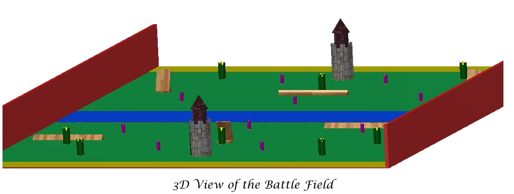

The KnightBots: Medieval Robots Championship is the first of a kind robotics competition where robots compete in five different medieval-inspired games to win the title of the champion along with fame and fortune. After going through the medieval inspection, the robot shall participate in the first game of target shooting. The second game is a racing game. The third game is a tug of war game. The fourth game is a jousting game. The fifth game is the battle of the castles where guilds of three to five robots each, battle each other on the field. The tournament champion shall be announced after tallying all the gold coins assembled from the six games and the inspection.
Teams will gather gold coins, representing the team’s score, for the following games:
The team with the highest score is crowned as the champion of the tournament and gains all the fortune and fame!
Details about the scoring in each game are explained hereinafter.
You are to design a robot that should fit in a 30 cm x 30 cm x 30 cm cube. The robot should be able to move around and shoot wooden sticks as arrows. It should also be able to carry a lance for the jousting game. The robot should be driven using a wireless remote control.
You are to design one robot that should play the five different games with minor modifications (replacing the shooting mechanism with a lance, etc.). Therefore designing and building your robot taking into consideration the required specifications and the strategies in the different games may be the difference between a dead robot and a winning one!
First things first! The robot should be composed of several systems.
Physical specifications of the robot should accommodate the above systems. In addition, no mechanism can obstruct the balloon. You should leave an empty 3 cm x 3 cm area in your robot to accommodate for the balloon.
The following figures show a typical robot views along with some 3D views. Dimensions are to be respected!
The drive system is responsible for moving your robot on the field. You can use any system you think is good for achieving this. Two, three, four wheels, or chains, with differential, Ackerman, or any other systems are allowed. The ground is either concrete, ceramic tiles, or wood.
The wireless communication system is any system (Bluetooth, Wi-Fi, RF, etc.) that is used to connect a remote controller (PS4, Xbox, Mobile Phone, etc.) to the robot. It should be used to move the robot and control the shooting/jousting mechanism. A driver should use it to control the robot during the different games.
The shooting mechanism is used in games 1 and 5. It should shoot arrows (wooden cylindrical sticks of length 10 cm and diameter of 4 to 5 mm). You should be able to aim it by either moving the whole robot or moving the mechanism as a turret (using servo motors). The following links are to videos explaining some possible shooting mechanisms:
Note that the shooting mechanism cannot shoot arrows at angles higher than 45 degrees.
The robot should include an automatic reloading mechanism for the arrows in games 1 and 5. It should be able to reload up to 12 arrows automatically.
The jousting mechanism should control the azimuth (and/or elevation) angle(s) of the lance (60 cm long) which should be fixed on the robot in game 4. You should build the whole system including the lance! Make sure the tip of the lance is not wider than 1 cm in diameter. The lance should be able to pop a balloon (the use of a needle is suggested).
The power supply should be a battery, preferable rechargeable, mounted on the robot.
The controller of the robot is open. Any microcontroller or microprocessor can be used.
Each team should design a coat of arms and print it on T-shirts they should wear during the tournament. The coat of arms should also be printed on a heraldic shield and stuck on the flag on the robot.
Before your robot can take part of the tournament and battle for the great prize, it needs to pass through the Medieval Inspection and Pitch which is considered Game 0. The team should prepare a pitch and an oral presentation, not longer than 5 minutes followed by Q&A, to be delivered in front of the inspection jury. The team should explain their strategy and decision-making process in their design.
The maximum score is 30 gold coins, and is divided into as follows:
The first game in the tournament is the Target Shooting game. In this game, your robot must shoot 10 tower targets in 2 minutes.
The targets are cylindrical towers 12.5 cm high with a diameter of 5 cm as shown below.
There are 10 targets that are aligned about 18 to 20 cm apart, 50 cm away from the robot as shown in the figure below.
Every target that is knocked down is worth 2 gold coins. In case all targets are knocked down before the 2 minutes are through, the team gets 1 gold coin for each remaining 10 seconds (fractions are neglected).
The total score is 20 gold coins plus the bonus.
At the end of this game, the team with the highest score will be declared the winner of the Target Shooting game.
The second game in the Tournament is a Racing game. In this game each robot should race down a 5-meter straight track against the clock. Each robot is allowed to do 2 runs, and the fastest run is only counted. The fastest robot will be named the racing champion.
The racing field is 5 m long and 40 cm wide.
All robots who finish the race will get 5 gold coins. The fastest robot gets 20 gold coins. The second fastest gets 15 gold coins, and the third fastest gets 10 gold coins.
The total score is 20 gold coins.
At the end of this game, the team with the highest score will be declared the winner of the Target Shooting game.
The third game in the Tournament is a Tug of War game. In this game two robots face each other in a duel. A 1-meter-long rope will be connected to both robots. The robots will pull the rope against each other. The robot that passes the middle-marked line loses. Each round has a time limit of 3 minutes. In case none of the robots was able to pull the other, both robots will lose the round. Each duel is won by winning 2 out of 3 rounds.
The tug of war field is 1 m long.
Teams will be divided in groups of two and each two robots will face each other in the tug of war field. Each duel is won by winning 2 out of 3 rounds. Every time a robot participates in a round, the robot scores 5 gold coins. If the robot wins the duel, it scores a total of 20 points. This means that a losing robot scores either 10 points (if it loses 2 passes) or 15 points (if it wins one pass and loses 2 passes), while the winner always scores 20 points.
The scores of the first elimination round of duels will be used in the final score, along with bonus gold coins accumulated in later tug of war stages.
Elimination stages will be carried out until 2 or 3 finalists in the tug of war game are determined. During the elimination stages, a team winning a duel scores an extra 1 gold coin per win. The winner of the tug of war game scores an extra 5 gold coins, the first runner-up scores an extra 3 gold coins, and the second runner-up (if available) scores an extra 1 gold coin.
The total score is 20 gold coins plus the bonus.
The fourth game in the Tournament is a Jousting game. In this game two robots face each other in a duel. Each robot should be equipped with a 60 cm lance and must hit the other robot’s balloon to pop it. The two robots face each other and then move in a straight path towards the other robot. Each duel is won by winning 2 out of 3 passes. After each pass, the judges will decide the winner of the pass (the robot which pops the balloon of the other robot) or if there is a tie. In case all passes are ties, the judges will decide the winner based on the best performance (aggressively, trying to hit the other robot and not avoiding the hit, etc.).
The jousting field is 3 m long where two separate and parallel paths 40 cm wide host the two robots. The field is described in the figures below.
Teams will be divided in groups of two and each two robots will face each other in the jousting field. Each duel is won by winning 2 out of 3 passes. Every time a robot participates in a pass, the robot scores 5 gold coins. If the robot wins the duel, it scores a total of 20 points. This means that a losing robot scores either 10 points (if it loses 2 passes) or 15 points (if it wins one pass and loses 2 passes), while the winner always scores 20 points.
The scores of the first elimination round of duels will be used in the final score, along with bonus gold coins accumulated in later jousting stages.
Elimination stages will be carried out until 2 or 3 finalists in the jousting game are determined. During the elimination stages, a team winning a duel scores an extra 1 gold coin per win. The winner of the jousting game scores an extra 5 gold coins, the first runner-up scores an extra 3 gold coins, and the second runner-up (if available) scores an extra 1 gold coin.
The total score is 20 gold coins plus the bonus.
The fifth game is the Battle of the Castles. This is not an individual game, rather than a guilds game. Two guilds, each composed of three to five robots, face each other on the field. The teams composing each guild will be picked randomly and made public on the day of the tournament. The goal of each guild is to knock down the maximum number of towers and the castle of the other guild by shooting arrows, while protecting their own, in a battle that lasts 5 minutes. Robots can also knock down other robots or be knocked down during the battle.
The field is a 9 m x 6 m area which is divided into two symmetrical halves. Each half contains one big castle, 2 big heavy towers, 3 big light towers, 2 small heavy towers, and 3 small light towers placed as shown in the figures below. Each guild has a 50 cm x 6 m base area where they can handle their robots. And there is a 1 m x 6 m area in the middle of the field that is empty (considered a neutral territory).

The castle is cylnder 85 cm high with a diameter of 30 cm. The 5 Big towers (2 heavy and 3 small) are 22.5 cm high with a diameter of 10 cm. And the 5 small towers (2 heavy and 3 small) are 12.5 cm high with a diameter of 5cm. The 3D pictures and crossectional views are shown below.
On the other hand, there are two obstacles available for each guild. The first is a one-meter ramp barrier to prevent robots from passing. And the second is a shield 30.7 cm heigh to protect a tower. Both obstacles can be placed on the field in a guild’s territory before the battle starts. They are shown in the figures below.
Before the beginning of each battle, each guild has a total of 150 arrows to use. These arrows can be divided among the robots, and reloading of the robots can only be done in the base area of the guild.
There will be protection around the field, and the team members are all required to wear protective goggles during the battles.
In this game, scoring will be for the guild, i.e., the robots in the same guild will get the same score. So it is suggested that they cooperate during the battle and agree on a strategy where each robot uses its own strengths for the benefits of the guild.
When the battle begins, robots are to knock down towers and the castle by shooting them or knocking them down by driving through them. In case, a robot accidentally knocks down its own tower, the gold coins for that tower will go to the other guild.
At the end of the battle, judges will score the gold coins for each guild according to the following:
The winning guild will qualify for the next round and have a 5 gold coins per win as a winning bonus. This will be repeated until only one guild wins the Battle of the Castles game. All three to five teams in the winning guild are considered the winners of the Battle of the Castles game.
The total score is 40 gold coins plus the bonus.
Click here to download the rules as regulations
Note that the rules and regulations may be changed without prior notice.